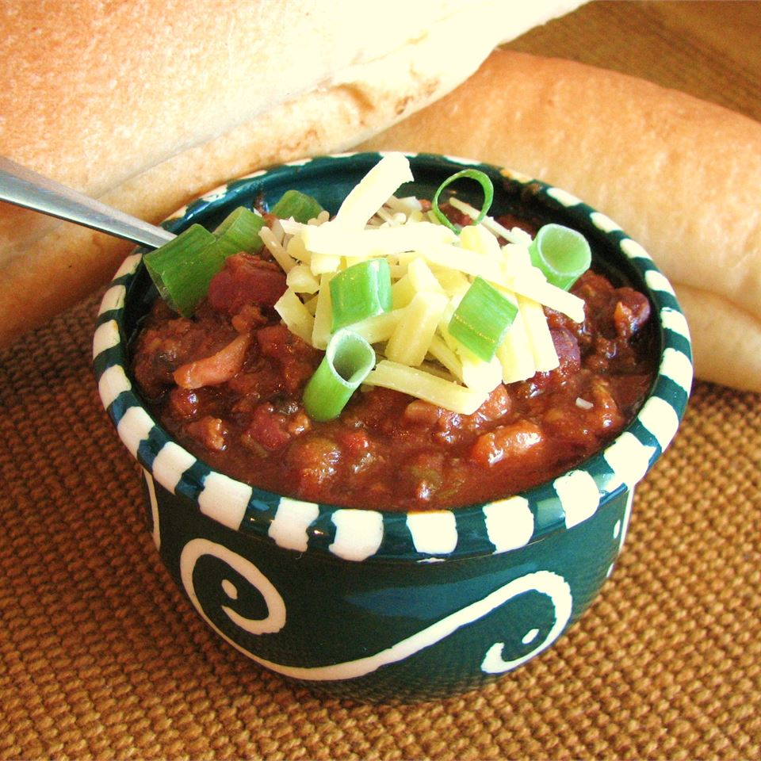

Description
The slow cooker is a great way to make chili. This beefy chili is packed
with beans, veggies, and spice.
Ingredients
- 1 pound ground beef
- ¾ cup diced onion
- ¾ cup diced celery
- ¾ cup diced green bell pepper
- 2 cloves garlic, minced
- 2 (10.75 ounce) cans tomato puree
- 1 (15 ounce) can kidney beans with liquid
- 1 (15 ounce) can kidney beans, drained
- 1 (15 ounce) can cannellini beans with liquid
- ½ tablespoon chili powder
- ½ teaspoon dried parsley
- 1 teaspoon salt
- ¾ teaspoon dried basil
- ¾ teaspoon dried oregano
- ¼ teaspoon ground black pepper
- ⅛ teaspoon hot pepper sauce
Steps
- Place the beef in a skillet over medium heat
- Cook until evenly brown
- Drain grease
- Place the beef in a slow cooker
- Mix in onion, celery, green bell pepper, garlic, tomato puree, kidney beans, and cannellini beans
- Season with chili powder, parsley, salt, basil, oregano, black pepper, and hot pepper sauce
- Cover, and cook 8 hours on Low